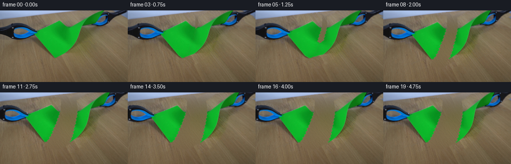
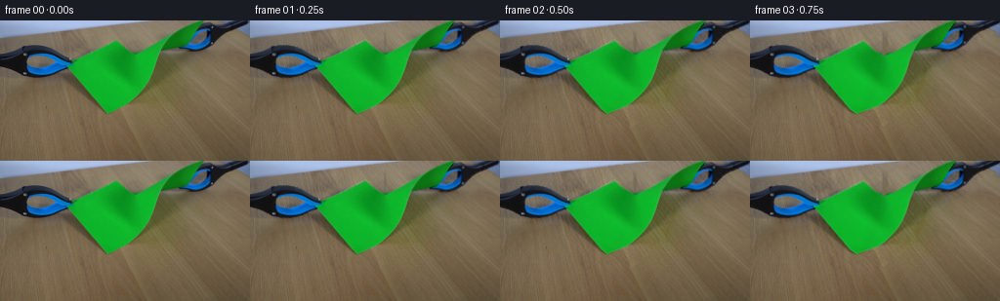
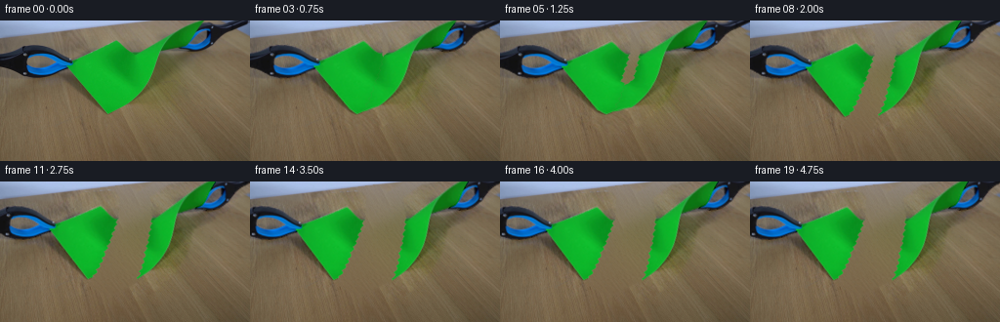
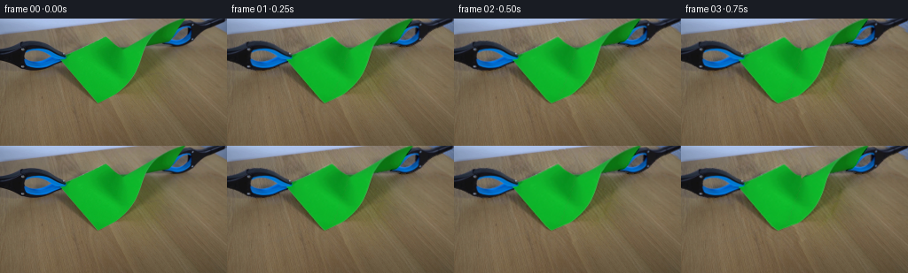

CODING AGENTS AS PIXEL WORLD MODELS
traex/GPT-6.1-Sol · 0043
点击播放 · 原生 RGB 像素
逐轮保存的候选
回放视频、检查图与代码变化。
每份候选均可单独播放。实际图片检查记录在下方工具轨迹中。
候选 01播放与检查图
点击播放 · 原生 RGB 像素


展开代码变化
--- 上一保存版本
+++ 本次保存版本
@@ -0,0 +1,235 @@
+from pathlib import Path
+import numpy as np
+from PIL import Image
+import cv2
+from scipy import ndimage
+import artifact_io
+
+ROOT=Path(__file__).resolve().parent
+S=3
+H,W=144,256
+
+def largest(mask):
+ n,l,s,c=cv2.connectedComponentsWithStats(mask.astype(np.uint8),8)
+ return l==(1+np.argmax(s[1:,4]))
+
+def smoothstep(v):
+ v=np.clip(v,0.,1.); return v*v*(3-2*v)
+
+def build_scene(im):
+ a=im.astype(np.float32)
+ r,g,b=a.transpose(2,0,1)
+ y,x=np.indices((H,W))
+ paper=largest((g-r>35)&(g-b>30))
+ darkblue=((b>r*1.04)&(b>g*.97)&(r<88))|(np.maximum.reduce([r,g,b])<55)
+ left=largest(darkblue&(x<76)&(y>23)&(y<60)&(~paper))
+ right=largest(darkblue&(x>174)&(y<36)&(~paper))
+ masks=[paper,left,right]
+ dist=[ndimage.distance_transform_edt(~m) for m in masks]
+ # Recover the static wooden work surface, including the obscured regions.
+ unknown=(dist[0]<22)|(dist[1]<9)|(dist[2]<10)
+ sky=y<19.2-.129*x
+ known=(~unknown)&(~sky)
+ xn=(x-128)/128.;yn=(y-72)/72.
+ basis=np.stack([xn**i*yn**j for i in range(5) for j in range(5-i)],axis=-1)
+ coeff=np.linalg.lstsq(basis[known],a[known],rcond=None)[0]
+ model=basis@coeff
+ # Local variation in the lighting, estimated exclusively from uncovered wood.
+ err=(a-model)*known[...,None]
+ weight=ndimage.gaussian_filter(known.astype(float),18)
+ local=np.stack([ndimage.gaussian_filter(err[...,c],18)/(weight+1.e-5) for c in range(3)],-1)
+ prediction=model+local
+ # Measured fine wood/sensor texture from the bare lower work surface.
+ residual=a-ndimage.gaussian_filter(a,(2.0,2.0,0))
+ tx=np.mod(x+17*(y//24),W);ty=105+np.mod(y,25)
+ noise=residual[ty,tx]
+ prediction+=noise*.8
+ d=ndimage.distance_transform_edt(unknown)
+ blend=smoothstep(d/4)
+ bg=a*(1-blend[...,None])+prediction*blend[...,None]
+ bg[sky]=a[sky]
+ bg=np.clip(bg,0,255).astype(np.float32)
+ alphas=[]
+ for k,m in enumerate(masks):
+ # A one-pixel matte around the original photographed edges. The
+ # premultiplied colors below exactly retain their original antialiasing.
+ ext=ndimage.binary_dilation(m,iterations=1)
+ alpha=m.astype(np.float32)
+ alpha[ext&~m]=.33
+ if k==0:
+ alpha[ext&~m]=.35
+ alphas.append(alpha)
+ union=np.maximum.reduce(alphas)
+ # Original soft occlusion shadows and the reflected green on the table.
+ delta=(a-bg)*(1-union[...,None])
+ delta[~unknown]=0
+ owner=np.argmin(np.stack([dist[0]/1.2,dist[1],dist[2]]),axis=0)
+ shadows=[]
+ for k in range(3):
+ wgt=ndimage.gaussian_filter((owner==k).astype(float),1)
+ # normalize soft assignments so their sum exactly matches the source.
+ shadows.append(wgt)
+ denom=sum(shadows)+1e-8
+ shadows=[delta*(v/denom)[...,None] for v in shadows]
+ layers=[]
+ for k,alpha in enumerate(alphas):
+ # foreground premultiplication with background removal at the edge
+ premul=(a-bg*(1-alpha[...,None]))
+ premul[alpha==0]=0
+ layers.append((alpha,premul))
+ def up(v):return cv2.resize(v,(W*S,H*S),interpolation=cv2.INTER_CUBIC).astype(np.float32)
+ return bg,[up(v) for v in alphas],[(up(v[0]),up(v[1])) for v in layers],[up(v) for v in shadows],masks
+
+# A fiber-scale, nonstraight fracture running from the existing top-edge notch
+# through the lower edge. It is fixed in material coordinates.
+ys=np.array([0,28,32,35,38,41,44,47,50,54,57,60,63,66,70,73,76,79,82,85,88,91,94,98,150],float)
+xs=np.array([138,138,138.0,135.7,137.0,134.2,135.3,131.9,133.1,130.4,131.2,127.9,129.,125.3,126.7,123.2,124.8,121.2,122.1,117.9,119.5,115.2,114.8,111.5,91],float)
+def seam(y):
+ return np.interp(y,ys,xs)+.26*np.sin(y*2.05)+.15*np.sin(y*3.21)
+
+
+def parameters(t):
+ # A sustained, slow hand pull; a little recoil follows the last fibers.
+ u=smoothstep(t/3.8)
+ pull=4.2*min(t,2)+13.0*smoothstep((t-1.4)/2.1)
+ recoil=.9*np.exp(-((t-2.18)/.22)**2)
+ lx=-(pull+recoil);rx=.88*pull+.65*recoil
+ ly=2.7*u;ry=-2.3*u
+ tip=32+68*smoothstep((t-.48)/1.56)
+ torn=tip>=97
+ wobble=np.sin(8.7*(t-2))*np.exp(-2.0*max(t-2,0))*smoothstep((t-1.8)/.3)
+ la=np.deg2rad(3.7*u+1.1*wobble)
+ ra=np.deg2rad(-8.0*u-2.0*wobble)
+ return [(lx,ly,la),(rx,ry,ra)],tip,torn
+
+
+def forward(x,y,side,t,pars,tip):
+ dx,dy,theta=pars[side]
+ pivot=(71.,43.) if side==0 else (195.,17.)
+ c=np.cos(theta);s=np.sin(theta)
+ ax=x-pivot[0];ay=y-pivot[1]
+ rigid_x=pivot[0]+ax*c-ay*s+dx
+ rigid_y=pivot[1]+ax*s+ay*c+dy
+ if tip>=97:
+ return rigid_x,rigid_y
+ line=seam(y)
+ # Intact fibers have a common displacement; each opposing corner is
+ # attached exactly to its own grabber. The separating opening is tapered
+ # to zero at the propagating crack tip.
+ open_=smoothstep((tip-y)/7.0)
+ if side==0:
+ width=np.maximum(11,line-(68+np.maximum(y-47,0)*.87))
+ anchor=np.clip((line-x)/width,0,1)
+ else:
+ width=np.maximum(8,np.interp(y,[0,27,34,63,96],[209,185,164,152,111])-line)
+ anchor=np.clip((x-line)/width,0,1)
+ w=open_+(1-open_)*anchor**1.3
+ sag=1.0*np.sin(np.clip((y-32)/64,0,1)*np.pi)*smoothstep(t/.7)
+ common_x=.1*pars[0][0]+.1*pars[1][0]
+ return x+w*(rigid_x-x)+(1-w)*common_x, y+w*(rigid_y-y)+(1-w)*sag
+
+
+def inverse_map(side,t,pars,tip):
+ yy,xx=np.indices((H*S,W*S),dtype=np.float32)
+ x=(xx+.5)/S-.5;y=(yy+.5)/S-.5
+ dx,dy,th=pars[side]
+ pivot=(71.,43.) if side==0 else (195.,17.)
+ c=np.cos(th);s=np.sin(th)
+ sx=pivot[0]+(x-pivot[0]-dx)*c+(y-pivot[1]-dy)*s
+ sy=pivot[1]-(x-pivot[0]-dx)*s+(y-pivot[1]-dy)*c
+ if tip<97:
+ # Newton inversion of the continuous membrane deformation.
+ for i in range(8):
+ fx,fy=forward(sx,sy,side,t,pars,tip)
+ ex=fx-x;ey=fy-y
+ fxx,fyx=forward(sx+.15,sy,side,t,pars,tip)
+ fxy,fyy=forward(sx,sy+.15,side,t,pars,tip)
+ j00=(fxx-fx)/.15;j10=(fyx-fy)/.15
+ j01=(fxy-fx)/.15;j11=(fyy-fy)/.15
+ det=j00*j11-j01*j10
+ det=np.where(abs(det)<.12,np.sign(det)*.12+1e-7,det)
+ sx-=np.clip((j11*ex-j01*ey)/det,-5,5)
+ sy-=np.clip((-j10*ex+j00*ey)/det,-5,5)
+ return ((sx+.5)*S-.5).astype(np.float32),((sy+.5)*S-.5).astype(np.float32)
+
+
+def rigid_map(side,pars):
+ yy,xx=np.indices((H*S,W*S),dtype=np.float32)
+ x=(xx+.5)/S-.5;y=(yy+.5)/S-.5
+ dx,dy,th=pars[side]
+ pivot=(71.,43.) if side==0 else (195.,17.)
+ c=np.cos(th);s=np.sin(th)
+ sx=pivot[0]+(x-pivot[0]-dx)*c+(y-pivot[1]-dy)*s
+ sy=pivot[1]-(x-pivot[0]-dx)*s+(y-pivot[1]-dy)*c
+ return ((sx+.5)*S-.5).astype(np.float32),((sy+.5)*S-.5).astype(np.float32)
+
+
+def remap(v,m):return cv2.remap(v,m[0],m[1],cv2.INTER_LINEAR,borderMode=cv2.BORDER_CONSTANT,borderValue=0)
+
+
+def render(im,bg,layers,shadows,t):
+ pars,tip,torn=parameters(t)
+ bgup=cv2.resize(bg,(W*S,H*S),interpolation=cv2.INTER_CUBIC)
+ yy,xx=np.indices((H*S,W*S),dtype=np.float32)
+ x=(xx+.5)/S-.5;y=(yy+.5)/S-.5
+ line=seam(y)
+ # Partition the actual photograph along the material fracture.
+ cut=smoothstep((line-x)*S+.5)
+ maps=[inverse_map(i,t,pars,tip) for i in range(2)]
+ toolmaps=[rigid_map(i,pars) for i in range(2)]
+ out=bgup.copy()
+ # The displaced original shadows retain their photographic softness.
+ for side,part in enumerate([cut,1-cut]):
+ out+=remap(shadows[0]*part[...,None],maps[side])
+ for side in range(2):out+=remap(shadows[side+1],toolmaps[side])
+ alpha,premul=layers[0]
+ for side,part in enumerate([cut,1-cut]):
+ pa=alpha*part
+ pc=premul*part[...,None]
+ # Gradual small changes of paper normals and a settling flutter.
+ flutter=np.sin(8.7*(t-2))*np.exp(-1.9*max(t-2,0))*smoothstep((t-1.7)/.4)
+ movement=smoothstep(t/1.5)
+ ridge=np.exp(-((x-line)/(4+3*smoothstep(t/2)))**2)
+ shade=1+movement*(.018*np.sin((x-95)/11+side)-.040*ridge)+.018*flutter*np.sin(y/17+side)
+ pc=pc*shade[...,None]
+ # Exposed ragged fibers are much thinner than a display pixel.
+ edge=np.exp(-((x-line-( -.17 if side==0 else .17))/.27)**2)
+ edge*=smoothstep((tip-y)/5)*smoothstep((y-31)/2)*movement
+ edge*=.45+.18*np.sin(y*2.9)**2
+ mint=np.stack([np.full_like(x,124),np.full_like(x,190),np.full_like(x,97)],-1)
+ pc=pc*(1-edge[...,None])+mint*pa[...,None]*edge[...,None]
+ wa=np.clip(remap(pa,maps[side]),0,1)
+ wc=remap(pc,maps[side])
+ out=out*(1-wa[...,None])+wc
+ # Pliers remain rigid, and their original jaws remain on the same corners.
+ for side in range(2):
+ al,col=layers[side+1]
+ wa=np.clip(remap(al,toolmaps[side]),0,1)
+ wc=remap(col,toolmaps[side])
+ out=out*(1-wa[...,None])+wc
+ return np.clip(cv2.resize(out,(W,H),interpolation=cv2.INTER_AREA),0,255)
+
+
+def main():
+ im=np.array(Image.open(ROOT/'first_frame.png').convert('RGB'))
+ bg,alpha,layers,shadows,masks=build_scene(im)
+ init=render(im,bg,layers,shadows,0)
+ # A stationary subpixel photography residual, feathered away only where
+ # moving elements were originally present. This retains the locked frame.
+ residual=im.astype(float)-init
+ moving=np.maximum.reduce([ndimage.binary_dilation(m,iterations=24 if i==0 else 11) for i,m in enumerate(masks)])
+ frames=[im]
+ for f in range(1,20):
+ t=f/4
+ raw=render(im,bg,layers,shadows,t)
+ correction=residual*(1-moving[...,None])
+ # Fade the tiny source-edge resampling discrepancy during first tug.
+ correction+=residual*moving[...,None]*np.exp(-t*10)
+ frames.append(np.clip(np.rint(raw+correction),0,255).astype(np.uint8))
+ frames=np.stack(frames).astype(np.uint8)
+ artifact_io.save(frames,ROOT)
+ Image.fromarray(np.clip(bg,0,255).astype('uint8')).save(ROOT/'.tmp'/'background.png')
+ np.save(ROOT/'.tmp'/'foreground_masks.npy',np.stack(masks))
+ print('Saved',frames.shape,'first identical:',np.array_equal(frames[0],im))
+
+if __name__=='__main__':main()
候选 02播放与检查图
点击播放 · 原生 RGB 像素


展开代码变化
--- 上一保存版本
+++ 本次保存版本
@@ -23,15 +23,18 @@
paper=largest((g-r>35)&(g-b>30))
darkblue=((b>r*1.04)&(b>g*.97)&(r<88))|(np.maximum.reduce([r,g,b])<55)
left=largest(darkblue&(x<76)&(y>23)&(y<60)&(~paper))
- right=largest(darkblue&(x>174)&(y<36)&(~paper))
+ # The pale blue beyond the upper-right tool is the fixed background,
+ # not part of the tool. Retain it even where it borders dark plastic.
+ rightsky=(x>238)&(y>.79*(x-240)+7.5)&(b-r>24)&(r>67)
+ right=largest(darkblue&(x>174)&(y<36)&(~paper)&(~rightsky))
masks=[paper,left,right]
dist=[ndimage.distance_transform_edt(~m) for m in masks]
# Recover the static wooden work surface, including the obscured regions.
unknown=(dist[0]<22)|(dist[1]<9)|(dist[2]<10)
- sky=y<19.2-.129*x
+ sky=(y<19.2-.129*x)|rightsky
known=(~unknown)&(~sky)
xn=(x-128)/128.;yn=(y-72)/72.
- basis=np.stack([xn**i*yn**j for i in range(5) for j in range(5-i)],axis=-1)
+ basis=np.stack([xn**i*yn**j for i in range(4) for j in range(4-i)],axis=-1)
coeff=np.linalg.lstsq(basis[known],a[known],rcond=None)[0]
model=basis@coeff
# Local variation in the lighting, estimated exclusively from uncovered wood.
可观测工具轨迹
实际执行的命令与返回图片。
命令 1exit 0
/bin/bash -lc 'ls -la; cat prompt.txt; cat GENERATION_RULES.md'
命令 2exit 0
/bin/bash -lc "cat artifact_io.py; python - <<'PY'
from PIL import Image
import numpy as np
im=np.array(Image.open('first_frame.png')); print(im.shape)
# coarse rgb color character render, 128x48
im=np.array(Image.open('first_frame.png').resize((128,48)))
for row in im:
s=''
for r,g,b in row.astype(float):
if g>r*1.18 and g>b*1.12 and g>65: c='G'
elif b>r*1.15 and b>g*1.03 and b>50:c='B'
elif max(r,g,b)-min(r,g,b)<20 and min(r,g,b)>190:c=' '
elif max(r,g,b)-min(r,g,b)<25 and min(r,g,b)>130:c='.'
elif max(r,g,b)<55:c='#'
elif max(r,g,b)<100:c='O'
elif r>g*1.18:c='r'
else:c='o'
s+=c
print(s)
PY"命令 3exit 0
/bin/bash -lc "python - <<'PY'
import numpy as np
from PIL import Image
from scipy import ndimage
im=np.array(Image.open('first_frame.png')); r,g,b=im.astype(float).transpose(2,0,1)
m=(g>r*1.2)&(g>b*1.16)&(g>65)
for y in range(0,105,2):
s=''
for x in range(0,256,2):
if m[y:y+2,x:x+2].mean()>.3:c='G'
elif b[y,x]>r[y,x]*1.2 and b[y,x]>g[y,x]*1.02:c='B'
elif max(r[y,x],g[y,x],b[y,x])<70:c='#'
else:c=' '
s+=c
print(f'{y:3} '+s)
print('green row bounds')
for y in range(0,100):
xs=np.where(m[y])[0]
if len(xs):print(y, xs.min(),xs.max(), 'splits', [(l[0],l[-1]) for l in np.split(xs,np.where(np.diff(xs)>1)[0]+1)])
print('pixels')
for p in [(80,70),(120,60),(140,45),(170,20),(180,10),(15,80),(200,70),(65,40),(200,8),(1,1),(80,5)]:
x,y=p;print(p,im[y,x])
PY"命令 4exit 0
/bin/bash -lc "python - <<'PY'
import numpy as np
from PIL import Image
im=np.array(Image.open('first_frame.png'));r,g,b=im.astype(float).transpose(2,0,1)
for y in range(23,62):
s=''
for x in range(0,82):
if g[y,x]>1.2*r[y,x] and g[y,x]>1.16*b[y,x] and g[y,x]>65:c='G'
elif (b[y,x]-r[y,x]>0) and b[y,x]>(g[y,x]-2):c='X'
elif max(im[y,x])<70:c='d'
elif max(im[y,x])<95:c='o'
else:c=' '
s+=c
print(f'{y:2} {s}')
print('right')
for y in range(0,37):
s=''
for x in range(175,256):
if g[y,x]>1.2*r[y,x] and g[y,x]>1.16*b[y,x] and g[y,x]>65:c='G'
elif (b[y,x]-r[y,x]>0) and b[y,x]>(g[y,x]-2):c='X'
elif max(im[y,x])<70:c='d'
elif max(im[y,x])<95:c='o'
else:c=' '
s+=c
print(f'{y:2} {s}')
PY"命令 5exit 0
/bin/bash -lc "python - <<'PY'
import importlib.util
for mod in ['cv2','scipy','numpy','PIL']:
print(mod, bool(importlib.util.find_spec(mod)))
from PIL import Image
import numpy as np
im=np.array(Image.open('first_frame.png'))
for y in range(0,144,8):
print('y',y,[(x,im[y,x].tolist()) for x in range(0,256,16)])
PY"命令 6exit 0
/bin/bash -lc "python - <<'PY'
from PIL import Image
import numpy as np,cv2
im=np.array(Image.open('first_frame.png')); r,g,b=im.astype(float).transpose(2,0,1);Y,X=np.indices(r.shape)
p=(g-r>35)&(g-b>30)
l=((b>r*1.04)&(b>g*.97)&(r<88)|(np.maximum.reduce([r,g,b])<55))&(X<76)&(Y>23)&(Y<60)
rr=((b>r*1.04)&(b>g*.97)&(r<88)|(np.maximum.reduce([r,g,b])<55))&(X>174)&(Y<36)
for name,m in [('paper',p),('left',l),('right',rr)]:
n,lab,stat,c=cv2.connectedComponentsWithStats(m.astype('uint8'))
print(name,[(s.tolist(),cc.tolist()) for s,cc in zip(stat[1:],c[1:]) if s[4]>3])
PY"命令 7exit 0
/bin/bash -lc "cat > generate.py <<'PY'
from pathlib import Path
import numpy as np
from PIL import Image
import cv2
from scipy import ndimage
import artifact_io
ROOT=Path(__file__).resolve().parent
S=3
H,W=144,256
def largest(mask):
n,l,s,c=cv2.connectedComponentsWithStats(mask.astype(np.uint8),8)
return l==(1+np.argmax(s[1:,4]))
def smoothstep(v):
v=np.clip(v,0.,1.); return v*v*(3-2*v)
def build_scene(im):
a=im.astype(np.float32)
r,g,b=a.transpose(2,0,1)
y,x=np.indices((H,W))
paper=largest((g-r>35)&(g-b>30))
darkblue=((b>r*1.04)&(b>g*.97)&(r<88))|(np.maximum.reduce([r,g,b])<55)
left=largest(darkblue&(x<76)&(y>23)&(y<60)&(~paper))
right=largest(darkblue&(x>174)&(y<36)&(~paper))
masks=[paper,left,right]
dist=[ndimage.distance_transform_edt(~m) for m in masks]
# Recover the static wooden work surface, including the obscured regions.
unknown=(dist[0]<22)|(dist[1]<9)|(dist[2]<10)
sky=y<19.2-.129*x
known=(~unknown)&(~sky)
xn=(x-128)/128.;yn=(y-72)/72.
basis=np.stack([xn**i*yn**j for i in range(5) for j in range(5-i)],axis=-1)
coeff=np.linalg.lstsq(basis[known],a[known],rcond=None)[0]
model=basis@coeff
# Local variation in the lighting, estimated exclusively from uncovered wood.
err=(a-model)*known[...,None]
weight=ndimage.gaussian_filter(known.astype(float),18)
local=np.stack([ndimage.gaussian_filter(err[...,c],18)/(weight+1.e-5) for c in range(3)],-1)
prediction=model+local
# Measured fine wood/sensor texture from the bare lower work surface.
residual=a-ndimage.gaussian_filter(a,(2.0,2.0,0))
tx=np.mod(x+17*(y//24),W);ty=105+np.mod(y,25)
noise=residual[ty,tx]
prediction+=noise*.8
d=ndimage.distance_transform_edt(unknown)
blend=smoothstep(d/4)
bg=a*(1-blend[...,None])+prediction*blend[...,None]
bg[sky]=a[sky]
bg=np.clip(bg,0,255).astype(np.float32)
alphas=[]
for k,m in enumerate(masks):
# A one-pixel matte around the original photographed edges. The
# premultiplied colors below exactly retain their original antialiasing.
ext=ndimage.binary_dilation(m,iterations=1)
alpha=m.astype(np.float32)
alpha[ext&~m]=.33
if k==0:
alpha[ext&~m]=.35
alphas.append(alpha)
union=np.maximum.reduce(alphas)
# Original soft occlusion shadows and the reflected green on the table.
delta=(a-bg)*(1-union[...,None])
delta[~unknown]=0
owner=np.argmin(np.stack([dist[0]/1.2,dist[1],dist[2]]),axis=0)
shadows=[]
for k in range(3):
wgt=ndimage.gaussian_filter((owner==k).astype(float),1)
# normalize soft assignments so their sum exactly matches the source.
shadows.append(wgt)
denom=sum(shadows)+1e-8
shadows=[delta*(v/denom)[...,None] for v in shadows]
layers=[]
for k,alpha in enumerate(alphas):
# foreground premultiplication with background removal at the edge
premul=(a-bg*(1-alpha[...,None]))
premul[alpha==0]=0
layers.append((alpha,premul))
def up(v):return cv2.resize(v,(W*S,H*S),interpolation=cv2.INTER_CUBIC).astype(np.float32)
return bg,[up(v) for v in alphas],[(up(v[0]),up(v[1])) for v in layers],[up(v) for v in shadows],masks
# A fiber-scale, nonstraight fracture running from the existing top-edge notch
# through the lower edge. It is fixed in material coordinates.
ys=np.array([0,28,32,35,38,41,44,47,50,54,57,60,63,66,70,73,76,79,82,85,88,91,94,98,150],float)
xs=np.array([138,138,138.0,135.7,137.0,134.2,135.3,131.9,133.1,130.4,131.2,127.9,129.,125.3,126.7,123.2,124.8,121.2,122.1,117.9,119.5,115.2,114.8,111.5,91],float)
def seam(y):
return np.interp(y,ys,xs)+.26*np.sin(y*2.05)+.15*np.sin(y*3.21)
def parameters(t):
# A sustained, slow hand pull; a little recoil follows the last fibers.
u=smoothstep(t/3.8)
pull=4.2*min(t,2)+13.0*smoothstep((t-1.4)/2.1)
recoil=.9*np.exp(-((t-2.18)/.22)**2)
lx=-(pull+recoil);rx=.88*pull+.65*recoil
ly=2.7*u;ry=-2.3*u
tip=32+68*smoothstep((t-.48)/1.56)
torn=tip>=97
wobble=np.sin(8.7*(t-2))*np.exp(-2.0*max(t-2,0))*smoothstep((t-1.8)/.3)
la=np.deg2rad(3.7*u+1.1*wobble)
ra=np.deg2rad(-8.0*u-2.0*wobble)
return [(lx,ly,la),(rx,ry,ra)],tip,torn
def forward(x,y,side,t,pars,tip):
dx,dy,theta=pars[side]
pivot=(71.,43.) if side==0 else (195.,17.)
c=np.cos(theta);s=np.sin(theta)
ax=x-pivot[0];ay=y-pivot[1]
rigid_x=pivot[0]+ax*c-ay*s+dx
rigid_y=pivot[1]+ax*s+ay*c+dy
if tip>=97:
return rigid_x,rigid_y
line=seam(y)
# Intact fibers have a common displacement; each opposing corner is
# attached exactly to its own grabber. The separating opening is tapered
# to zero at the propagating crack tip.
open_=smoothstep((tip-y)/7.0)
if side==0:
width=np.maximum(11,line-(68+np.maximum(y-47,0)*.87))
anchor=np.clip((line-x)/width,0,1)
else:
width=np.maximum(8,np.interp(y,[0,27,34,63,96],[209,185,164,152,111])-line)
anchor=np.clip((x-line)/width,0,1)
w=open_+(1-open_)*anchor**1.3
sag=1.0*np.sin(np.clip((y-32)/64,0,1)*np.pi)*smoothstep(t/.7)
common_x=.1*pars[0][0]+.1*pars[1][0]
return x+w*(rigid_x-x)+(1-w)*common_x, y+w*(rigid_y-y)+(1-w)*sag
def inverse_map(side,t,pars,tip):
yy,xx=np.indices((H*S,W*S),dtype=np.float32)
x=(xx+.5)/S-.5;y=(yy+.5)/S-.5
dx,dy,th=pars[side]
pivot=(71.,43.) if side==0 else (195.,17.)
c=np.cos(th);s=np.sin(th)
sx=pivot[0]+(x-pivot[0]-dx)*c+(y-pivot[1]-dy)*s
sy=pivot[1]-(x-pivot[0]-dx)*s+(y-pivot[1]-dy)*c
if tip<97:
# Newton inversion of the continuous membrane deformation.
for i in range(8):
fx,fy=forward(sx,sy,side,t,pars,tip)
ex=fx-x;ey=fy-y
fxx,fyx=forward(sx+.15,sy,side,t,pars,tip)
fxy,fyy=forward(sx,sy+.15,side,t,pars,tip)
j00=(fxx-fx)/.15;j10=(fyx-fy)/.15
j01=(fxy-fx)/.15;j11=(fyy-fy)/.15
det=j00*j11-j01*j10
det=np.where(abs(det)<.12,np.sign(det)*.12+1e-7,det)
sx-=np.clip((j11*ex-j01*ey)/det,-5,5)
sy-=np.clip((-j10*ex+j00*ey)/det,-5,5)
return ((sx+.5)*S-.5).astype(np.float32),((sy+.5)*S-.5).astype(np.float32)
def rigid_map(side,pars):
yy,xx=np.indices((H*S,W*S),dtype=np.float32)
x=(xx+.5)/S-.5;y=(yy+.5)/S-.5
dx,dy,th=pars[side]
pivot=(71.,43.) if side==0 else (195.,17.)
c=np.cos(th);s=np.sin(th)
sx=pivot[0]+(x-pivot[0]-dx)*c+(y-pivot[1]-dy)*s
sy=pivot[1]-(x-pivot[0]-dx)*s+(y-pivot[1]-dy)*c
return ((sx+.5)*S-.5).astype(np.float32),((sy+.5)*S-.5).astype(np.float32)
def remap(v,m):return cv2.remap(v,m[0],m[1],cv2.INTER_LINEAR,borderMode=cv2.BORDER_CONSTANT,borderValue=0)
def render(im,bg,layers,shadows,t):
pars,tip,torn=parameters(t)
bgup=cv2.resize(bg,(W*S,H*S),interpolation=cv2.INTER_CUBIC)
yy,xx=np.indices((H*S,W*S),dtype=np.float32)
x=(xx+.5)/S-.5;y=(yy+.5)/S-.5
line=seam(y)
# Partition the actual photograph along the material fracture.
cut=smoothstep((line-x)*S+.5)
maps=[inverse_map(i,t,pars,tip) for i in range(2)]
toolmaps=[rigid_map(i,pars) for i in range(2)]
out=bgup.copy()
# The displaced original shadows retain their photographic softness.
for side,part in enumerate([cut,1-cut]):
out+=remap(shadows[0]*part[...,None],maps[side])
for side in range(2):out+=remap(shadows[side+1],toolmaps[side])
alpha,premul=layers[0]
for side,part in enumerate([cut,1-cut]):
pa=alpha*part
pc=premul*part[...,None]
# Gradual small changes of paper normals and a settling flutter.
flutter=np.sin(8.7*(t-2))*np.exp(-1.9*max(t-2,0))*smoothstep((t-1.7)/.4)
movement=smoothstep(t/1.5)
ridge=np.exp(-((x-line)/(4+3*smoothstep(t/2)))**2)
shade=1+movement*(.018*np.sin((x-95)/11+side)-.040*ridge)+.018*flutter*np.sin(y/17+side)
pc=pc*shade[...,None]
# Exposed ragged fibers are much thinner than a display pixel.
edge=np.exp(-((x-line-( -.17 if side==0 else .17))/.27)**2)
edge*=smoothstep((tip-y)/5)*smoothstep((y-31)/2)*movement
edge*=.45+.18*np.sin(y*2.9)**2
mint=np.stack([np.full_like(x,124),np.full_like(x,190),np.full_like(x,97)],-1)
pc=pc*(1-edge[...,None])+mint*pa[...,None]*edge[...,None]
wa=np.clip(remap(pa,maps[side]),0,1)
wc=remap(pc,maps[side])
out=out*(1-wa[...,None])+wc
# Pliers remain rigid, and their original jaws remain on the same corners.
for side in range(2):
al,col=layers[side+1]
wa=np.clip(remap(al,toolmaps[side]),0,1)
wc=remap(col,toolmaps[side])
out=out*(1-wa[...,None])+wc
return np.clip(cv2.resize(out,(W,H),interpolation=cv2.INTER_AREA),0,255)
def main():
im=np.array(Image.open(ROOT/'first_frame.png').convert('RGB'))
bg,alpha,layers,shadows,masks=build_scene(im)
init=render(im,bg,layers,shadows,0)
# A stationary subpixel photography residual, feathered away only where
# moving elements were originally present. This retains the locked frame.
residual=im.astype(float)-init
moving=np.maximum.reduce([ndimage.binary_dilation(m,iterations=24 if i==0 else 11) for i,m in enumerate(masks)])
frames=[im]
for f in range(1,20):
t=f/4
raw=render(im,bg,layers,shadows,t)
correction=residual*(1-moving[...,None])
# Fade the tiny source-edge resampling discrepancy during first tug.
correction+=residual*moving[...,None]*np.exp(-t*10)
frames.append(np.clip(np.rint(raw+correction),0,255).astype(np.uint8))
frames=np.stack(frames).astype(np.uint8)
artifact_io.save(frames,ROOT)
Image.fromarray(np.clip(bg,0,255).astype('uint8')).save(ROOT/'.tmp'/'background.png')
np.save(ROOT/'.tmp'/'foreground_masks.npy',np.stack(masks))
print('Saved',frames.shape,'first identical:',np.array_equal(frames[0],im))
if __name__=='__main__':main()
PY
python generate.py"命令 8exit 0
/bin/bash -lc "python - <<'PY'
import numpy as np,cv2
from PIL import Image
for f in [1,4,7,9,12,19]:
im=np.array(Image.open(f'frames/{f:02}.png'));r,g,b=im.astype(float).transpose(2,0,1)
p=(g-r>35)&(g-b>30)
n,l,s,c=cv2.connectedComponentsWithStats(p.astype('uint8'))
print('\\nFRAME',f,'green components',s[1:].tolist())
for y in range(0,106,3):
st=''
for x in range(0,256,3):
rr,gg,bb=im[y:y+3,x:x+3].mean((0,1))
if gg-rr>35 and gg-bb>30: ch='G'
elif bb>rr*1.04 and bb>gg*.97 and rr<88 or max(rr,gg,bb)<55:ch='X'
elif bb>rr*1.1 and rr>100:ch='.'
else:ch=' '
st+=ch
print(st)
print('changed per transition')
for f in range(1,20):
a=np.array(Image.open(f'frames/{f:02}.png')).astype(float);b=np.array(Image.open(f'frames/{f-1:02}.png')).astype(float)
print(f,np.abs(a-b).mean(),np.sum(np.max(abs(a-b),axis=-1)>25))
PY"命令 9exit 0
/bin/bash -lc "python - <<'PY'
import generate as z
import numpy as np
from PIL import Image
im=np.array(Image.open('first_frame.png'));bg,al,la,sh,ma=z.build_scene(im)
print('recovered background')
for y in [0,8,16,24,32,40,48,56,64,72,80,88,96]:
print(y,[(x,np.rint(bg[y,x]).astype(int).tolist()) for x in [64,80,100,120,140,160,180,200,220,240]])
print('paper pts')
for p in [(80,48),(120,60),(135,45),(150,35),(120,80)]:
for f in [0,1,4,8,19]:
t=f/4;pars,tip,torn=z.parameters(t); side=int(p[0]>z.seam(p[1]));xx,yy=z.forward(np.array(float(p[0])),np.array(float(p[1])),side,t,pars,tip);out=np.array(Image.open(f'frames/{f:02}.png'));print(p,f,round(float(xx),1),round(float(yy),1),out[int(round(float(yy))),int(round(float(xx)))].tolist())
print('motion',[(f,z.parameters(f/4)[0],z.parameters(f/4)[1]) for f in [1,4,7,8,9,19]])
PY"命令 10exit 0
/bin/bash -lc "python - <<'PY'
from PIL import Image
import numpy as np
im=np.array(Image.open('first_frame.png'))
for y in range(0,19,2):
print(y,[(x,im[y,x].tolist()) for x in range(238,256,2)])
PY"命令 11exit 0
/bin/bash -lc "python - <<'PY'
import numpy as np,cv2
from scipy import ndimage
from PIL import Image
import generate as z
im=np.array(Image.open('first_frame.png'));bg,al,la,sh,ma=z.build_scene(im);y,x=np.indices((144,256));unknown=np.maximum.reduce([ndimage.distance_transform_edt(~m)<d for m,d in zip(ma,[22,9,10])]);sky=y<19.2-.129*x;known=(~unknown)&(~sky);a=im.astype(float)
for degree in [1,2,3,4]:
xn=(x-128)/128;yn=(y-72)/72
b=np.stack([xn**i*yn**j for i in range(degree+1) for j in range(degree+1-i)],-1)
c=np.linalg.lstsq(b[known],a[known],rcond=None)[0]; m=b@c
print(degree, 'error',np.abs(m[known]-a[known]).mean(),'top',np.rint(m[0,[160,180,200,220,240]]),'middle',np.rint(m[48,[80,120,160]]))
PY"命令 12exit 0
/bin/bash -lc "python generate.py && python - <<'PY'
from pathlib import Path
from PIL import Image
import numpy as np
p=np.load('pixels.npz')['pixels']; print('packed shape',p.shape)
f=np.array([np.array(Image.open(x)) for x in sorted(Path('frames').glob('*.png'))]);print(f.shape,f.dtype,'matches source',np.array_equal(f[0],np.array(Image.open('first_frame.png'))))
print('files',[(x,Path(x).stat().st_size) for x in ['generate.py','pixels.npz','index.html']])
# Quantify component separation and the tool rigidity after the change.
import cv2
for k in [0,4,8,12,19]:
r,g,b=f[k].astype(float).transpose(2,0,1)
_,_,st,_=cv2.connectedComponentsWithStats(((g-r>35)&(g-b>30)).astype('uint8'))
print(k,'paper areas',st[1:,4].tolist())
PY"保存候选 2 份；完成命令 12 次；可验证图片返回 0 张。原始 API 响应与完整日志保留在本地。